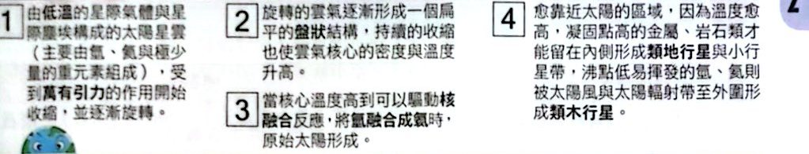
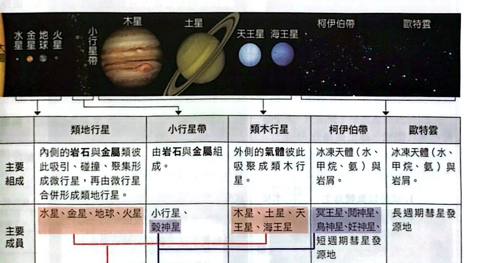
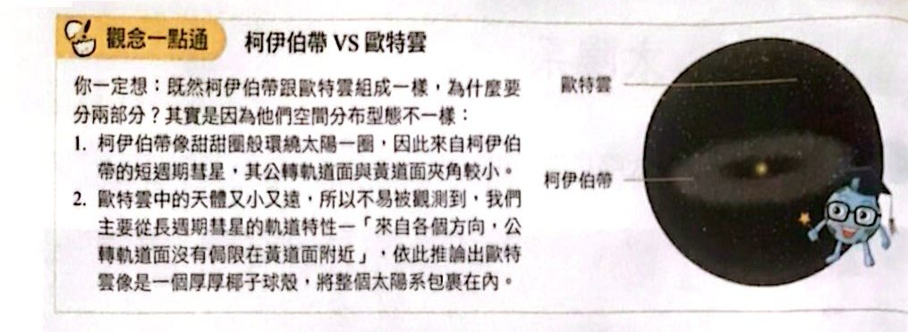
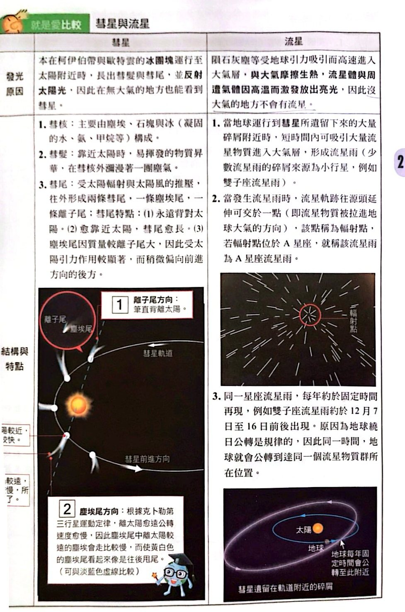
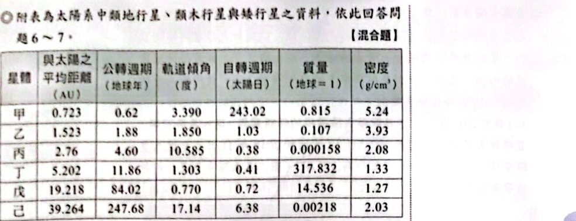
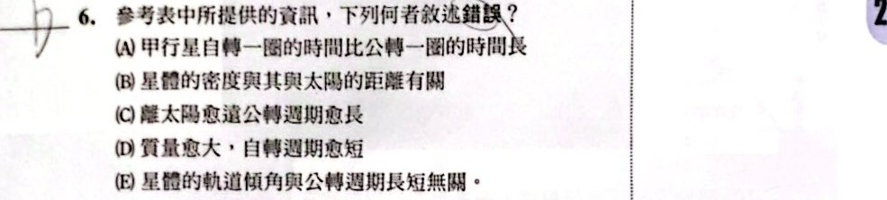
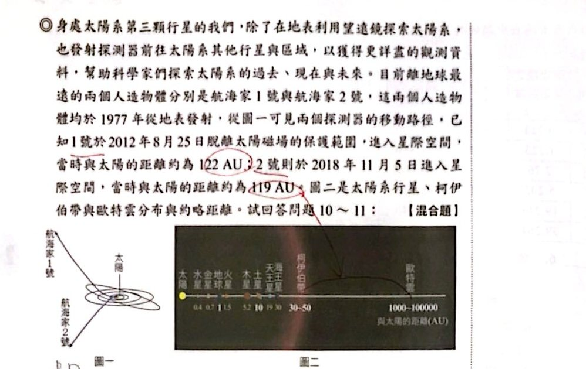
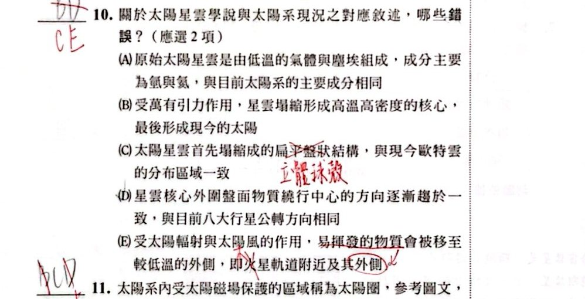

太陽系的形成——太陽星雲學說

太陽星雲學說的四個步驟（講義 p.25）
太陽系成員的分布與分類

太陽系成員的分布與分類（講義 p.25）

柯伊伯帶 VS 歐特雲（講義 p.26）
太陽系的行星
彗星與流星

就是愛比較：彗星與流星（講義 p.27）
小試身手
看答案與詳解收起
答(D)
解這題在考什麼：火星的特徵：氧化鐵、自轉軸傾角 25°、大氣稀薄（約地球 1%）。
- (A) ○ 地表氧化鐵＝紅色。
- (B) ○ 自轉軸傾斜，中午太陽仰角隨季節變化。
- (C) ○ 大氣稀薄 ⇒ 晝夜溫差大。
- (D) ✗ 火星大氣雖以 CO₂ 為主，但總量極少，溫室效應弱，平均溫度比地球低，所以「不可能」。
- (E) ○ 火星公轉週期約 1.88 年，四季循環比地球長。
看答案與詳解收起
答(C)
解這題在考什麼：行星、矮行星、小天體的分類。
- (A) ✗ 矮行星要是近乎圓球狀（靠自身重力）。
- (B) ✗ 冥王星是矮行星，因為它無法清除軌道附近的天體。
- (C) ○ 八大行星公轉軌道幾乎在同一平面，公轉方向相同（太陽星雲學說可解釋）。
- (D) ✗ 小行星多數質量太小、不成圓球狀，屬太陽系小天體（穀神星才是矮行星）。
- (E) ✗ 質量由大至小：行星 ＞ 矮行星 ＞ 太陽系小天體。
看答案與詳解收起
答(A) 太陽系內的小天體
解這題在考什麼：流星雨的流星體來自彗星或小行星遺留的碎屑（太陽系小天體）；與恆星、太陽風帶電粒子、宇宙射線無關。象限儀座流星雨的母體是小行星。
看答案與詳解收起
答(A) 同樣為 1 月 4 日前後幾天
解這題在考什麼：地球公轉有規律，每年同一時間會回到同一群碎屑附近，所以流星雨每年約在固定日期出現。
看答案與詳解收起
答(E)
解這題在考什麼：火星的基本資料。
- (A) ✗ 火星是行星，不是地球的衛星；月球才是衛星。
- (B) ✗ 火星離地球不是最近（金星才是），也不能因此推論有生命。
- (C) ✗ 火星公轉週期（1.88 年）與地球不同；季節相似是因為自轉軸傾角相近，不是因為公轉週期相同。
- (D) ✗ 火星有衛星（火衛一、二），但畫夜變化是因為自轉，與衛星無關。
- (E) ○ 火星繞日軌道為橢圓，公轉一圈約 1.88 年，大於地球的一年。


看答案與詳解收起
答(D)
解這題在考什麼：表中甲～己：甲＝金星（0.723 AU、自轉 243 日）、乙＝火星、丙＝穀神星、丁＝木星、戊＝天王星、己＝冥王星。
- (A) ○ 甲自轉週期 243 日 ＞ 公轉週期 0.62 年（約 226 日），自轉一圈比公轉一圈長。
- (B) ○ 離太陽近的天體密度較大（類地）、遠的較小（類木），有關。
- (C) ○ 離太陽愈遠，公轉週期愈長（克卜勒第三定律）。
- (D) ✗ 質量愈大並不一定自轉愈短：甲質量 0.815 但自轉 243 日，乙質量 0.107 自轉 1.03 日。
- (E) ○ 軌道傾角與公轉週期無明顯關係。
看答案與詳解收起
答類地行星：甲、乙；類木行星：丁、戊；矮行星：丙、己
解這題在考什麼：分類依據是質量、密度、與太陽的距離。
- 類地行星：離太陽近（0.7～1.5 AU）、密度高（5.24、3.93）、質量中等（0.815、0.107 地球質量）⇒ 甲、乙。
- 類木行星：離太陽遠、質量很大（317.8、14.5 地球質量）、密度低（1.33、1.27）⇒ 丁、戊。
- 矮行星：質量極小（0.000158、0.00218 地球質量，不足以清除軌道），不屬八大行星 ⇒ 丙（穀神星）、己（冥王星）。
看答案與詳解收起
答(A)
解這題在考什麼：離子尾筆直背離太陽；塵埃尾稍偏向前進方向的後方。看圖中 A 位置，離子尾（藍色）背對太陽，方向正確。
看答案與詳解收起
答(C) C 位置
解這題在考什麼：愈靠近太陽，彗尾愈長。C 位置最接近太陽（近日點），彗尾最長。


看答案與詳解收起
答(C)(E)
解這題在考什麼：太陽星雲學說各步驟。
- (A) ○ 原始星雲主要為氫與氦（與目前太陽系的主要成分相同）。
- (B) ○ 受萬有引力作用，星雲塌縮形成高溫高密度的核心，最後形成太陽。
- (C) ✗ 太陽星雲塌縮後形成扁平盤狀結構，對應行星的分布；歐特雲是正球體殼狀，並不一致。
- (D) ○ 星雲核心外圍物質繞行方向逐漸趨於一致，與八大行星公轉方向相同。
- (E) ✗ 易揮發物質被移至較低溫外側，應是木星軌道附近及其外側，不是火星。（講義原圖有改成「木星」）
看答案與詳解收起
答(A)(C)(E)
解這題在考什麼：太陽圈＝太陽磁場保護範圍，離太陽約 120 AU。由圖二：行星最外側的海王星約 30 AU、柯伊伯帶 30～50 AU、歐特雲 1000～100000 AU。
- (A) ○ 航海家 1 號先飛過木星，才飛到 122 AU 離開太陽圈。
- (B) ✗ 航海家 2 號早在 1989 年已飛過海王星，之後（2018）才進入星際空間。
- (C) ○ 柯伊伯帶（30～50 AU）在太陽圈範圍內。
- (D) ✗ 太陽圈之外才是星際空間，柯伊伯帶在太陽圈內，不在星際空間內。
- (E) ○ 歐特雲（1000 AU 以外）在太陽圈範圍之外。
看答案與詳解收起
答尚未離開太陽系
解這題在考什麼：太陽系的範圍包含歐特雲（最遠約 100000 AU）。
- 航海家 1 號：現在 122 AU，100 年後約 122 ＋ 3.6×100 ＝ 482 AU。
- 航海家 2 號：119 ＋ 3.3×100 ＝ 449 AU。
- 兩者都還不到歐特雲內緣（約 1000 AU），更不用說外緣 100000 AU ⇒ 100 年內尚未離開太陽系（只是離開太陽圈、進入星際空間）。